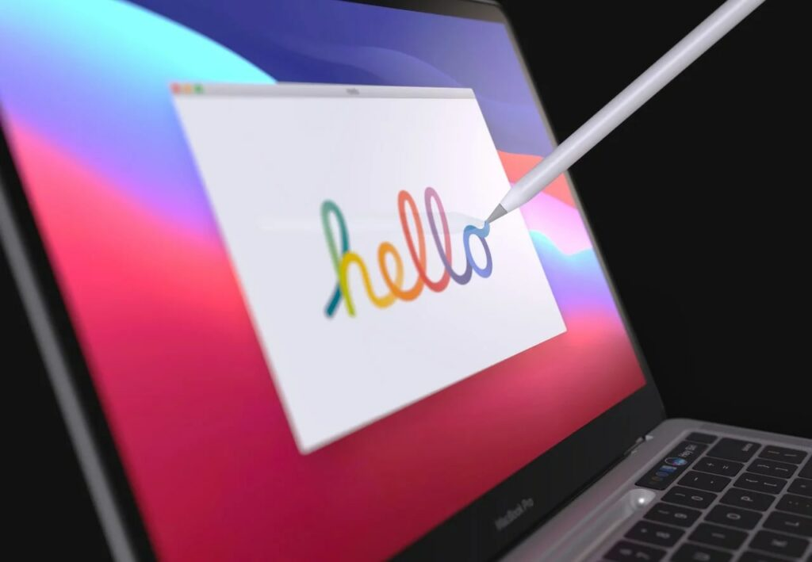

DigiNews
DigiNews
تمامی حقوق این سایت برای دیجی نیوز محفوظ است. نقل مطالب با ذکر منبع بلامانع است.
copy Right© 2022 DigiNews News Agancy, All rights reserved

اپل ظاهرا روی توسعه نسخه جدیدی از مک بوک با پشتیبانی از قلم کار میکند
طبق گزارشهایی که بر اساس یکی از پتنتهای جدید اپل به دست آمده، ظاهرا غول فناوری همچنان برنامههایی برای پشتیبانی از اپل پنسل در یکی از نسخههای آینده مک بوک را دارد. طبق تصاویر و ...
طبق گزارشهایی که بر اساس یکی از پتنتهای جدید اپل به دست آمده، ظاهرا غول فناوری همچنان برنامههایی برای پشتیبانی از اپل پنسل در یکی از نسخههای آینده مک بوک را دارد. طبق تصاویر و توضیحات به دست آمده از این پتنت، غول فناوری قصد دارد در بالای صفحه کلید مک بوک، جایگاه مخصوصی برای قرار دادن قلم اپل به کاربران ارائه کند.
طبق گزارش Patently Apple و توضیحات ارائه شده در این پتنت، هنگامی که کاربران قلم را در جایگاه مخصوص خود قرار داده باشند، میتواند به عنوان یک ماوس عمل کند. همچنین از نظر مکان قرارگیری، جایگاه مخصوص قلم، جایگزین کلیدهای فانکشن (F-Key) در بالای صفحه کلید خواهد شد و البته این کلیدهای کاربردی، روی قلم نمایش داده خواهند شد.
هرچند در گذشته هم گزارشهایی درباره مکبوک با جایگاه مخصوص اپل پنسل منتشر شده بود، اما در گزارش جدید به ویژگیهای جدیدی اشاره شده است. به عنوان مثال، اپل برای نگه داشتن قلم در بالای دستگاه خود از یک عنصر مغناطیسی استفاده خواهد کرد. اساسا به نظر میرسد اپل در نظر دارد تا نوار لمسی مکبوک پرو M1 را با اپل پنسل جایگزین کند تا بتواند عملکرد مربوط به قلم و نوار لمسی را به صورت همزمان ارائه کند.
احتمال وجود نمایشگر لسمی در مک بوک
با این وجود، میتوان انتظار داشت که اپل در صورت استفاده از اپل پنسل در مک بوک، دستگاه خود را به نمایشگر لمسی نیز مجهز خواهد کرد.
اپل یک برند محبوب در بازار و مخصوصا برای انجام کارهای درسی و آموزشی محسوب میشود، بنابراین وجود یک نمایشگر لمسی به همراه قلم، میتواند مک بوک را به یک گزینه ایدهآل برای پروژههای درسی تبدیل کند. همچنین در تصاویر این پتنت، به طور دقیق مشخص نیست که از کدام نسخه مک بوک استفاده شده است.
در نهایت، به خاطر داشته باشد، این فقط یکی از چندین پتنت ثبت شده توسط اپل است که به طور قطعی نمیتوان گفت به محصول نهایی تبدیل خواهد شد.
DigiNews
DigiNews
تمامی حقوق این سایت برای دیجی نیوز محفوظ است. نقل مطالب با ذکر منبع بلامانع است.
copy Right© 2022 DigiNews News Agancy, All rights reserved